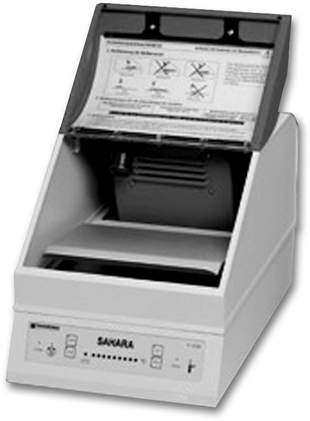
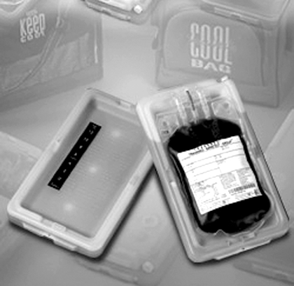
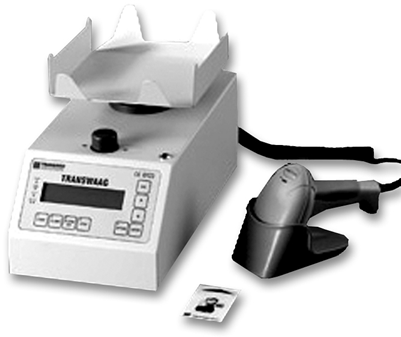
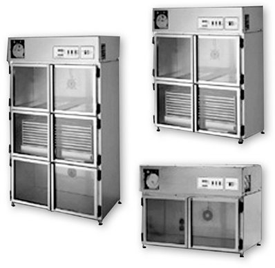
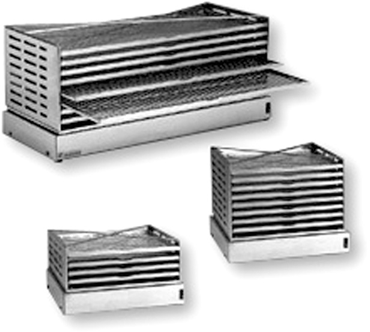
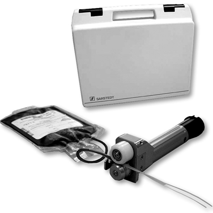
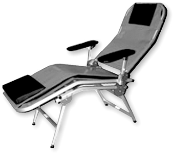

Equipos para banco de sangre

Sahara III®
DESCRIPCIÓN:
Descongelación de unidades de plasma por medio de calor seco.
Evita el riesgo potencial de contaminación de componentes sanguíneos en el baño María.
Permite el descongelamiento y atemperado de unidades sanguíneas e infusiones de un modo esterilizado.

Trans Control
DESCRIPCIÓN:
Es el único medio profesional para el envío y transportación de componentes sanguíneos asegurando en todo momento la calidad pre transfusional.
La temperatura de los elementos permanece constante durante mucho tiempo, aunque la temperatura exterior cambie. El TRANS CONTROL está preparado para su utilización cuando el medio líquido se transforma en cristalino.
Los elementos de TRANS CONTROL se suministran para varias temperaturas:
• 22ºC para trombocitos.
• 4ºC para eritrocitos.
• -30ºC para plasma congelado.
La capacidad de los elementos de TRANS CONTROL se puede ampliar mediante marcos apropiados que posean las mismas propiedades de temperatura.

Transwaag
DESCRIPCIÓN:
TRANSWAAG es una balanza agitadora controlada por microprocesador que se puede utilizar en donaciones con sistemas de bolsa sencilla o múltiple. TRANSWAAG calcula la cantidad de la sangre que entra en las bolsas de extracción y la mezcla constantemente con la solución estabilizante que se encuentra en dichas bolsas con el fin de evitar que se coagule.
TRANSWAAG se puede alimentar con tensión de red o de batería. Durante la donación, calcula constantemente el tiempo, el volumen y el peso de la donación y lo compara con los valores nominales predeterminados.
Incubadores
DESCRIPCIÓN:
Incubadores para el almacenamiento controlado de concentrados de plaquetas
El incubador permite un almacenamiento de los concentrados de plaquetas a una temperatura constante de 22°C (temperatura de almacenamiento óptima). El número de agitadores que pueden colocarse varía según la versión.
Los incubadores se caracterizan por:
• Temperatura controlada por microprocesador.
• Unidad de control de temperatura, movimiento del agitador y posición de la puerta.
• Posibilidad de conexión a una alarma centralizada.
• Registro de temperaturas mediante un registrador semanal de diagrama circular.
• Carcasa de acero inoxidable.
• Puertas con doble acristalamiento de vidrio templado.


Agitadores
DESCRIPCIÓN:
Agitadores para el almacenamiento de concentrado de trombocitos
Todos los modelos operan de forma silenciosa. La media es de 60 movimientos por minuto, aunque se puede ajustar en cada caso.
La carcasa está fabricada en acero fino y las superficies están recubiertas de plástico. Hay tres modelos de diferentes tamaños.

Rodillos portátiles
semiautomáticos
DESCRIPCIÓN:
Con ellos se pueden colocar grapas selladoras de forma sencilla y se pueden comprimir los tubos de las bolsas de sangre.

Sillón de donantes
DESCRIPCIÓN:
El sillón de donantes coloca al donante en una posición tumbada de descanso durante y después de la sesión de donación. El sillón de donantes es plegable, ligero, resistente y ahorra espacio. Los apoyabrazos móviles y ajustables facilitan la subida y bajada al sillón, así como la posición de descanso de los brazos durante la donación. En caso necesario, se puede colocar una posición antishock de hasta 30º. Todas las partes del sillón son fáciles de limpiar.
Además existe la posibilidad de montar un soporte de rollos de papel en la cabecera.
Registro SAHARA III: 0240E2015 SSA
DATOS COMPLEMENTARIOS: Para mayor información comunicarse a:
SARSTEDT MÉXICO S. DE R.L. DE C.V.
Teléfono: (55) 8501-1577
Fax: 8501-1578
e-mail: info.mx@sarstedt.com
y en nuestra página www.sarstedt.com